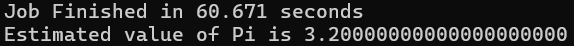

分布式存储与计算_LAB
Lab 1
[!NOTE] 第一次上机实验 目的：熟悉Linux系统和基本命令 实验环境：Linux操作系统(可以使用Ubuntu on windows,iOS系统中的Term)
对于大多数未曾使用过Linux操作系统的人来说，使用WSL是一种捷径，使用Ubuntu则可以更好的修改各种错误(因为大多数人都使用这一发行版，并且本教程也基于Ubuntu)
跳过WSL的安装，因为实在是没有难度，你当然也可以使用虚拟机，我推荐你使用Virtual Box，只需要修改教程相关的路径部分即可，但是我需要提醒你不要吝啬虚拟机的内存，否则会出现节点资源不足而停摆的情况
0.帮助命令
比如查看ls命令的帮助，可以输入
man ls & ls --help
1.文件操作命令的使用
- 查看文件与目录ls 进入Linux系统，输入 ls 回车(回车后命令运行，此后的说明中省略回车 尝试ls的其它参数
ls -a
ls -l
ls -lrth
- 用vim或者vi编辑器新建一个test.txt文件(使用方式请自行搜索)，在文件中键入任意内容：比如 this is test 保存，退出
vi test.txt
// 如果安装了vim可以直接使用vim
vim test.txt
// 按i进入insert模式
this is test
// 保存并退出
:wq
-
ls查看当前目录下新生成的文件test.txt
-
显示文件内容cat
cat test.txt
- 复制文件test.txt 到文件
cp test.txt test1.txt
cp test.txt test2.txt
-
删除命令rm，输入 rm testl.txt
-
移动命令,输入 mv test2.txt test1.txt
2.目录命令的使用
- cd命令（该命令用来改变当前目录）
cd mytest
- mkdir命令（用于在当前目录下建立一个子目录）
mkdir mytest
- rmdir命令（移除当前目录下的目录）
rmdir mytest1
- pwd（显示当前路径）
pwd
- 移动test.txt文件（假设该文件在~/目录下)到当前目录下
mv test.txt ./ cd ~ rmdir mytest\
rm -rf mytest
3.重定向输入输出，比较>和>>的作用
cat test1.txt
cat test1.txt > test.txt
cat test.txt test1.txt > test2.txt
cat test2.txt
cat test.txt test1.txt >> test2.txt
4.管道命令
cat test2.txt|wc
cat test2.txt|awk '{print $3}'

Lab 2
这个部分老师的操作文档写的非常混乱，我结合林子雨老师的教材和自己的经验进行一些修改以便于操作(也修改了一些安装顺序)，下面是修改后的安装步骤
1.创建新的hadoop账户
// sudo adduser <username>
sudo adduser hadoop
sudo vim /etc/sudoers
// insert module
hadoop ALL=(ALL:ALL) ALL
// 加入位置可以选择在sudo下方
切换账户
su hadoop
新建两个文件夹用来后续操作
mkdir software
mkdir module
2.安装两个基本文件
- JDK8
- Hadoop3.4.2
[!warning] 软件版本 需要注意的是，软件是会随着时间迭代的，因此版本号和文件名显然也会跟着改变，所以下面的一切与这两个文件有关的命令都需要注意修改对应的版本号进行操作
- JDK的安装
首先进入网址：JDK_downloads，你可以在Java achieve中找到对应的版本，例如我使用JDK8就使用了jdk-8u451-linux-x64.tar.gz，安装在windows下即可
- Hadoop的安装
直接进入官网安装即可，选择Binary版本，同样安装在windows下
安装之后需要记住位置，后续需要在wsl中通过mnt来进行传输
如何传输？
假设您的文件在 Windows 路径为 D:\Users\YourName\Documents\my_file.txt，并且您想把它转移到 WSL 中当前用户的家目录 (~) 下
示例路径：
windows：D:\Users\YourName\Documents\my_file.txt
wsl：/mnt/d/Users/YourName/Documents/my_file.txt
[!tip] 窍门 只需要在前面加上/mnt，在哪个盘就在后面跟上盘符，例如D盘就加上/d，后面只需要改变反斜杠即可
然后就是mv命令，前面是原位置，后面是移动后希望文件所处的位置
mv /mnt/d/Users/YourName/Documents/my_file.txt ~/target_directory/
将那两个安装包从windows下移动到 ~/software 下(注意文件名需要根据你下载到的实际文件修改，路径也需要根据实际所处的位置修改)
以 hadoop-3.4.2.tar.gz 为例
mv /mnt/d/Users/lenovo/Desktop/hadoop-3.4.2.tar.gz ~/software/
使用ls命令会得到如下结果
hadoop@Eurekaimer:~/software$ ls
hadoop-3.4.2.tar.gz jdk-8u451-linux-x64.tar.gz
然后将这两个压缩包解压到 module 文件夹下
以 jdk-8u451-linux-x64.tar.gz 为例
tar -xvzf jdk-8u451-linux-x64.tar.gz -C ~/module
关于上面命令的 -xvzf 中的四个选项的含义可以直接搜索，在此不赘述
3.配置环境变量
- 先配置JDK的环境变量，首先回到最初的目录，然后使用vim打开配置文件
cd
vim ~/.bashrc
加入以下内容(推荐加入位置在末尾，内容需要根据实际文件名修改)
注：可以在 module 目录下使用ls得到
hadoop@Eurekaimer:~/module$ ls
hadoop-3.4.2 jdk1.8.0_451
添加内容：
export JAVA_HOME=/home/hadoop/module/jdk1.8.0_451
export PATH=$PATH:$JAVA_HOME/bin
// 加入后保存退出
:wq
// 运行source使得配置生效
source ~/.bashrc
// 测试安装是否成功
java -version
- 配置Hadoop环境变量
类似的
cd
vim ~/.bashrc
加入以下内容(推荐加入位置在末尾，内容需要根据实际文件名修改)
注：可以在 module 目录下使用ls得到
hadoop@Eurekaimer:~/module$ ls
hadoop-3.4.2 jdk1.8.0_451
添加内容：
export HADOOP_HOME=/home/hadoop/module/hadoop-3.4.2
export PATH=$PATH:$JAVA_HOME/bin:$HADOOP_HOME/bin:$HADOOP_HOME/sbin
// 加入后保存退出
:wq
// 运行source使得配置生效
source ~/.bashrc
// 测试安装是否成功
hadoop version
4.设置ssh免密登录
需要先安装openssh
sudo apt-get install openssh-server pdsh
可以先创建一个文件夹 ~/.ssh
cd ~
mkdir .ssh
cd ~/.ssh
ssh-keygen -t rsa
cd
cat ~/.ssh/id_rsa.pub >> ~/.ssh/authorized_keys
验证是否能够免密登录
ssh localhost
这个步骤不应输入密码，结束后退出
exit
[!tip] 关于免密登录的目的 为什么要免密登录？ 想要体会这一点应当在设置免密登录之前直接进行一次
ssh localhost操作，我们会发现登录需要输入密码，而输入密码对于多节点的操作而言是非常麻烦的，因此我们需要设置免密登录
5.修改配置文件
主要是三个文件
- core-site.xml
vim core-site.xml
<configuration> 和 </configuration> 之间加入
注意缩进(类似html标签)
<property>
<name>fs.defaultFS</name>
<value>hdfs://localhost:9820</value>
</property>
<property>
<name>hadoop.tmp.dir</name>
<value>/home/hadoop/module/hadoop-3.3.6/tmp</value>
</property>
- hdfs-site.xml
vim hdfs-site.xml
仍然是 <configuration> 和 </configuration> 之间加入
<property>
<name>dfs.replication</name>
<value>1</value>
</property>
<property>
<name>dfs.namenode.secondary.http-address</name>
<value>localhost:9868</value>
</property>
<property>
<name>dfs.namenode.http-address</name>
<value>localhost:9870</value>
</property>
- hadoop-env.sh
vim hadoop-env.sh
加入以下
export JAVA_HOME=/home/hadoop/module/jdk1.8.0_451
export HDFS_NAMENODE_USER=hadoop
export HDFS_DATANODE_USER=hadoop
export HDFS_SECONDARYNAME_USER=hadoop
6.格式化HDFS文件系统
hdfs namenode -format
7.启动集群
start-dfs.sh
jps
查看服务，打开浏览器输入 http://localhost:9870
8.运行例子
cd
mkdir input
cd input
使用vim生成测试文件 test1.txt 和 test2.txt，每个文件输入若干单词
将目录上传到hdfs文件系统
hdfs dfs -put ~/input /input
cd $HADOOP_HOME/share/hadoop/mapreduce
hadoop jar hadoop-mapreduce-examples-3.4.2.jar wordcount /input /output
查看输出目录
hdfs dfs -ls /output
查看最终结果
hdfs dfs -cat /output/part-r-00000

[!NOTE] 彩蛋 如果统计结果正确，那么说明你的 Hadoop 伪分布式集群就搭建成功并验证完成了！ 我写的是microsoft love linux!
Lab 3
第四次上机实验的内容为YARN的配置，具体内容如下：
- 配置并启动YARN
- Yarn中添加队列small,并将任务提交至small队列运行
- 修改capacity-scheduler.xml文件（最好提前备份该文件cp capacity-scheduler.xml capacity-scheduler.xml.bak).修改内容包括增加所有和small队列相关的属性，并且分配default队列和small队列之间的资源占有比例。
- 向指定队列提交任务 $hadoop jar $HADOOP_HOME/share/hadoop/mapreduce/hadoop-mapreduce-example-3.4.2.jar pi -Dmapreduce.job.queuename=small 10 10
- 在yarn的web服务页面查看提交的任务情况和队列情况
1. YARN环境配置（承接HDFS配置）
主要是修改三个文件
- mapred-site.xml
- yarn-site.xml
- hadoop-env.sh
\(\mathbf{Remark:}\)下面的软件版本都是我的版本，相应的使用需修改
配置第一个
cd $HADOOP_HOME/etc/hadoop
# 备份可以不备
cp mapred-site.xml.template mapred-site.xml
vim mapred-site.xml
在两个< configuratkion >插入< property > 最后如下：
<configuration>
<property>
<name>mapreduce.framework.name</name>
<value>yarn</value>
</property>
<property>
<name>yarn.app.mapreduce.am.env</name>
<value>HADOOP_MAPRED_HOME=/home/hadoop/module/hadoop-3.4.2</value>
</property>
<property>
<name>mapreduce.map.env</name>
<value>HADOOP_MAPRED_HOME=/home/hadoop/module/hadoop-3.4.2</value>
</property>
<property>
<name>mapreduce.reduce.env</name>
<value>HADOOP_MAPRED_HOME=/home/hadoop/module/hadoop-3.4.2</value>
</property>
# 后面两条可以不插入
# 关于端口的部分都可以不插入，因为有默认值
<property>
<name>mapreduce.jobhistory.address</name>
<value>localhost:10020</value>
</property>
<property>
<name>mapreduce.jobhistory.webapp.address</name>
<value>localhost:19888</value>
</property>
</configuration>
配置第二个
vim yarn-site.xml
<configuration>
<property>
<name>yarn.resourcemanager.hostname</name>
<value>Eurekaime</value> # 这里是你的hostname主机名(主机名是@后面的)
</property>
<property>
<name>yarn.nodemanager.aux-services</name>
<value>mapreduce_shuffle</value>
</property>
# 同理端口可以不接入
<property>
<name>yarn.resourcemanager.webapp.address</name>
<value>Eurekaimer:8088</value># 这里仍然是主机名
</property>
</configuration>
第一个property主机名(hostname)
配置第三个
vim hadoop-env.sh
末尾添加：
export YARN_RESOURCEMANAGER_USER=hadoop
export YARN_NODEMANAGER_USER=hadoop
2. 启动Yarn服务
# 如果之前启动过的关闭
$HADOOP_HOME/sbin/stop-all.sh
# 启动HDFS和YARN
$HADOOP_HOME/sbin/start-dfs.sh
$HADOOP_HOME/sbin/start-yarn.sh
$HADOOP_HOME/sbin/mr-jobhistory-daemon.sh start historyserver

第三条命令报错是因为给出的这个命令是Hadoop2.x版本的，但是它会自动转换为3.x
如果在 $HADOOP_HOME 目录下：
stop-all.sh
# HDFS
start-dfs.sh
# Yarn
start-yarn.sh
# 历史服务器
mr-jobhistory-daemon.sh start historyserver
检查：
jps
896 DataNode 1793 JobHistoryServer 1137 SecondaryNameNode 769 NameNode 1570 NodeManager 2439 ResourceManager 2735 Jps
应该能看到至少以下进程：NameNode，DataNode，ResourceManager，NodeManager，JobHistoryServer
3. 配置并启动 small 队列
修改 capacity-scheduler.xml 文件
cd $HADOOP_HOME/etc/hadoop
# 备份仍然可以不用打
cp capacity-scheduler.xml capacity-scheduler.xml.bak
vim capacity-scheduler.xml
这个是比较麻烦的，你需要在文件的 <configuration> 和 </configuration> 标签之间，加入以下内容。这些配置定义了 root 队列下的子队列 default 和 small，并分配了资源比例（70% 给 default，30% 给 small）(比例可以调，只需要加和100%即可)
<property>
<name>yarn.scheduler.capacity.root.queues</name>
<value>default,small</value># 这行加入small队列
</property>
# default
<property>
<name>yarn.scheduler.capacity.root.default.capacity</name>
<value>70</value># 调整比例
</property>
<property>
<name>yarn.scheduler.capacity.root.default.maximum-capacity</name>
<value>100</value>
</property>
# small
<property>
<name>yarn.scheduler.capacity.root.small.capacity</name>
<value>30</value>
</property>
<property>
<name>yarn.scheduler.capacity.root.small.maximum-capacity</name>
<value>30</value>
</property>
保险起见应该给每个property标签都类似定义相关的small队列的版本，例如上面的部分就是两个default和两个small，但是使用时其他属性都存在默认值，所以不配置small的标签也可以跑通
# 确保配置small队列能够使用(刷新)
yarn rmadmin -refreshQueues
4. 提交任务
hadoop jar $HADOOP_HOME/share/hadoop/mapreduce/hadoop-mapreduce-examples-3.4.2.jar pi -Dmapreduce.job.queuename=small 10 10
精度相当差，如果要更高的精度可以调整后面参数(10 10)

如果要使用web端的话，检查一下端口：
sudo vim /etc/hosts
打开之后进行配置
# This file was automatically generated by WSL. To stop automatic generation of this file, add the following entry to /etc/wsl.conf:
# [network]
# generateHosts = false
127.0.0.1 localhost
# 主机名 ip需要统一
127.0.0.1 Eurekaimer. Eurekaimer
# 用户名
127.0.0.1 hadoop hadoop
重启一下：
stop-yarn.sh
start-yarn.sh
yarn rmadmin -refreshQueues
然后尝试访问http://localhost:8088
有时候因为防火墙无法访问，所以采取http协议，或者把电脑防火墙关掉
[!warning] 关于最后一步提交之后但是无法开始任务 也就是一直卡在提交结束，但是任务迟迟没有开始，有可能是因为你的任务需求内存大于你的节点能够提供的内存，对于这种情况(如果使用虚拟机)，你需要调整节点最大可用内存，或者降低任务需要内存，也可以虚报内存(所以说安装虚拟机的时候不要把自己的内存配置写的太小了)
Lab 4
一切文件版本和路径根据自己情况调整
1.安装Spark 3.4.2
使用之前需要Java和Hadoop环境(很好安装，在之前的Lab中已经安装过)
注：下面需要根据自己的Java/Hadoop/Spark版本进行，可以使用下面的命令查看
cat ~/.bashrc
# 这是我的输出
export JAVA_HOME=/home/hadoop/module/jdk1.8.0_451
export PATH=$PATH:$JAVA_HOME/bin
export HADOOP_HOME=/home/hadoop/module/hadoop-3.4.2
export PATH=$PATH:$JAVA_HOME/bin:$HADOOP_HOME/bin:$HADOOP_HOME/sbin
# 解读：
# Java 版本: jdk1.8.0_451
# Hadoop 版本:hadoop-3.4.2
# Spark 版本（假设下载）: spark-3.4.2-bin-without-hadoop.tgz
由于老师的安装文档比较老因此使用的是比较古老的Spark版本，只能去Apache Archive下载(这是本次实验耗时最久的地方)，然后就是正常移动文件(WSL)，如果是虚拟机或是本地Linux正常移动即可
mv /mnt/e/spark-3.4.2-bin-without-hadoop.tgz ~/software/
解压
tar -xvzf ~/software/spark-3.4.2-bin-without-hadoop.tgz -C ~/module/
PPT复制下来-C前面横线格式不对
移动解压文件并改名spark
mv ~/module/spark-3.4.2-bin-without-hadoop/ ~/module/spark
本地模式
然后开始配置文件spark-env.sh
# 仍然备份，但是改动较少不太可能改错
cd ~/module/spark/conf
cp spark-env.sh.template spark-env.sh
vim spark-env.sh
在最后加上(老师的课件需要打开两次，这里方便就把后续的配置文件一起写上)
# 这是原本的
export SPARK_DIST_CLASSPATH=$(/home/hadoop/module/hadoop-3.3.6/bin/hadoop classpath)
# 这是后面的
export JAVA_HOME=/home/hadoop/module/jdk1.8.0_451
# 指定 Hadoop 配置文件的目录，用于YARN和HDFS集成
export HADOOP_CONF_DIR=/home/hadoop/module/hadoop-3.4.2/etc/hadoop
# Standalone Master 的主机名和端口
SPARK_MASTER_HOST=localhost
SPARK_MASTER_PORT=7077
由此可以使用本地模式，如果要使用HDFS则需要提前打开Hadoop
Standalone模式
仍然是那个conf文件夹
cp workers.template workers
vim workers
# 里面的改为
localhost
# 里面的默认应该就是，这步没必要做
启动Standalone模式，没必要运行，不想运行直接跳过
# 需要在spark目录下
./sbin/start-master.sh
./sbin/start-workers.sh spark://localhost:7077
jps
# 应该能看到 Master 和 Worker 进程
# 不在目录下可以如下操作，但是需要把下面的环境变量$SPARK_HOME先配置好(或者键入正确的目录)
# 1. 启动 Master 进程 [cite: 281]
$SPARK_HOME/sbin/start-master.sh
# 2. 启动 Worker 进程，连接到 Master [cite: 282]
$SPARK_HOME/sbin/start-workers.sh spark://localhost:7077
# 3. 检查进程
jps
# 应该能看到 Master 和 Worker 进程
配置环境变量：
vim ~/.bashrc
# 加入
export SPARK_HOME=/home/hadoop/module/spark
export PATH=$PATH:$SPARK_HOME/bin
# 使得新配置生效
source ~/.bashrc
# 然后应该就可以使用Spark了
spark-shell
# 应该就可以使用spark了，这个需要确认一下，确认完了ctrl C退出
2.安装sbt并配置环境
sbt（Simple Build Tool）用于打包 Scala 编写的 Spark 应用程序
安装好了仍然解压安装包
tar -xvzf ~/software/sbt-1.9.9.tgz -C ~/module/sbt
# 配置环境
vim ~/.bashrc
# 末尾加入
export PATH=$PATH:~/module/sbt/bin
# 使配置生效
source ~/.bashrc
3.创建任务
创建文件夹
mkdir ~/sparkapp
mkdir –p ~/sparkapp/src/main/scala
撰写代码
vim ~/sparkapp/src/main/scala/SimpleApp.scala
加入下面的代码
import org.apache.spark.SparkContext
import org.apache.spark.SparkContext._
import org.apache.spark.SparkConf
object SimpleApp {
def main(args: Array[String]) {
val logFile = "file:///home/hadoop/module/spark/README.md" // 用于统计的文本文件 [cite: 789]
val conf = new SparkConf().setAppName("Simple Application")
val sc = new SparkContext(conf)
val logData = sc.textFile(logFile, 2).cache()
val numAs = logData.filter(line => line.contains("a")).count()
val numBs = logData.filter(line => line.contains("b")).count()
println("Lines with a: %s, Lines with b: %s".format(numAs, numBs))
sc.stop() // 补充 sc.stop() 确保程序正常退出，老师课件没写
}
}
声明该应用程序的信息以及与Spark的依赖关系
vim ~/sparkapp/simple.sbt
# 加入
name := "Simple Project"
version := "1.0"
scalaVersion := "2.12.18" // 与 Spark 3.4.2 兼容的 Scala 版本
libraryDependencies += "org.apache.spark" %% "spark-core" % "3.4.2" % "provided" // Spark 依赖版本
打包
cd ~/sparkapp
# 2. 编译并打包应用程序 (sbt package)
sbt package
# 第一次运行时 sbt 会下载依赖包，耗时较久
# 成功后，生成的 JAR 包应当位于 ~/sparkapp/target/scala-2.12/simple-project_2.12-1.0.jar
应该会生成一个jar包
4.提交任务
#建议使用下面的命令 注意$前面还有$ 并非笔误，那个老师的提交命令又有毛病，class和master前面的横线都少了一个
$SPARK_HOME/bin/spark-submit \
--class "SimpleApp" \
--master spark://localhost:7077 \
~/sparkapp/target/scala-2.12/simple-project_2.12-1.0.jar
你应该会在日志中找到这样一个句子
2025-11-11 09:25:08,414 INFO scheduler.DAGScheduler: Job 1 finished: count at SimpleApp.scala:12, took 0.157960 s
Lines with a: 72, Lines with b: 39
这说明成功了
5.快速签字检查
一键打开所有
start-all.sh
cd ~/module/spark
./sbin/start-master.sh
./sbin/start-workers.sh spark://localhost:7077
jps
~/module/spark/bin/spark-submit \
--class "SimpleApp" \
--master spark://localhost:7077 \
~/sparkapp/target/scala-2.12/simple-project_2.12-1.0.jar
到这里所有的需要上机签字的部分就结束了(算平时分的部分)，但是对于想要学好分布式的同学来说，熟悉Scala语法和代码实现也是不得不品的一环，但是由于本人比较懒就跳过后续的两次Scala语言的上机作业了，因为在LLM的时代下，你写不出正确的代码说明这门科目不是很适合你了！！！